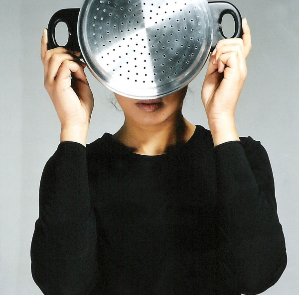
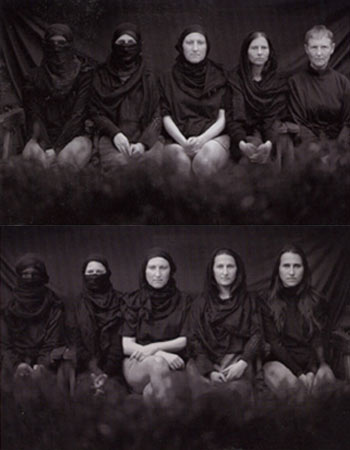
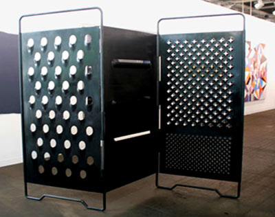

|
|
هنرمندان زن فمینیست خاورمیانه /پلهایی برای زنان
سه شنبه23 اسفند 1390
زلیخا بوعبدالله(Zoulikha Bou abdellah) هنرمند الجزیره ای متولد مسکو است. خانواده او با فرار از جنگ داخلی کشورشان، در سال ۱۹۹۳ به فرانسه رفتند، به همین دلیل در آثار زلیخا، ترکیب فرهنگ های متفاوت به وضوح دیده می شود و آثار او که همراه با سرپیچی از سنت و کلیشه است، نشان دهنده الهام گیری او از این هویت چند گانه است. او با کمک چیدمان، ویدئو و عکس و ایده «دیگری» مظاهر سیاسی، اجتماعی، اخلاقی و مذهبی غالب ما را به چالش می کشد.
فیلم دانسون (Dansons)که یکی از اولین ویدئو های اوست نمایی از میان تنه برهنه یک زن را نشان می دهد که تکه پارچه های آبی، سفید و قرمز به آن گره زده شده است. سکوت ابتدای فیلم با شروع ناگهانی ترانه ی لا مارسی(La Marseillaise)، صدای سکه ها و آویزهای لباس شکسته می شود.
این ویدئو که در گالری های متعددی در دنیا به نمایش در آمده، آمیزه ای از الگو های فرهنگی فرانسوی و الجزیره ای را در نمایی غیرمنتظره از یک زن نشان می دهد.
اینجا از سوی دیگر تشخیص این که چه کسی و چه چیزی استثمار می شود، سخت است. همه جزئیات پرفرمنس، از میان تنه ی جدا شده از بدن تا رنگ های پرچم فرانسه و موسیقی، از بستر خود خارج شده است و بنابراین تاثیر آن بر مخاطب همان قدر که لذت بخش است، گیج کننده نیز هست. در نهایت، زبان اثر به وضوح طنزآمیز است.
عموما هنرمندان شرق گرای غربی بخش هایی از هنر اسلامی، به ویژه تصاویر اروتیک از حرمسرا ها، را به شکلی در کنار هم قرار می دهند که مخاطب را به حداکثر لذت بصری برسانند. این اثر اشاره ای به این دید کلیشه ای نیز دارد.
در مجموعه دیگری از عکس های او، زنی ظرف های مخصوص طبخ کوسکوس را مقابل صورتش نگه داشته است. کوسکوس یکی از غذاهای ویژه شمال آفریقا است. زلیخا در توضیح این اثر فقط سئوال می کند: «آیا او پشت این کلیشه پنهان شده است؟ آیا او نمی خواهد به چیزی جز کلیشه ها و قوانینی که جامعه مردسالار به او دیکته می کند، دست یابد»؟

او درباره اثر دیگرش « تک رنگ آبی» 2006، می نویسد:« تک رنگ آبی و آبی لاجوردی ترکیبی از رنگ های طبیعی و منظره ای مدرن است. این رنگ تاویلی از آسمان و دریاست. در این فضای آبی همه چیز ممکن به نظر می رسد، بنابراین چرا از این فرصت برای امکان همنشینی برهنگی و حجاب استفاده نشود»؟
لیلا شوا(Laila Shawa)، هنرمند فلسطینی متولد غزه، یکی از فعال ترین هنرمندان عرب در حوزه سیاسی است .وی معتقد است وظیفه اصلی هنرمند معاصر، ثبت نشانه های دوران خود است. شوا در اوایل سال ۱۹۶۹ در کلاس های هنرمند اکسپرسیونیست ایتالیایی- رناتو گوتوسو – شرکت کرد و در اواخر همان دهه - پیش از مهاجرت به بیروت و در نهایت به لندن - واحد درسی هنر و صنایع دستی را در مدرسه کار و توانبخشی سازمان ملل در غزه ایجاد کرد.
آثار لیلا را می توان به دوره های متفاوتی تقسیم کرد. او در دو دهه ۶۰ و به ویژه دهه۹۰ از عکس برای نمایش مسائل مربوط به فلسطین و اورشلیم استفاده می کرد. لیلا در این مجموعه ها از دیوارنگاری های( گرافیتی) مردم فلسطین استفاده کرد؛ دیوار نگاری هایی که پیام امید و مقاومت را در فضای پر از سانسور اسرائیل به نمایش می گذارند.
مجموعه « پسران سرباز» شوا نشان دهنده ناامیدی تلخ او از امضای عهدنامه اسلو است که به زعم او هیچ تغییری در وضعیت کودکان غزه ایجاد نکرد و در واقع فقط باعث پررنگ تر شدن نوشته ها و نقاشی های دیوار پشت پسرک شد. در عین حال، اسباب بازی چوبی پسر شباهت انکارناپذیری به اسحله دارد. این مجموعه با عنوان «دیوارهای غزه» دیوارنگاری های سریعی را نشان می دهد که فلسطینی ها با کمک آن با یکدیگر و سربازان اسراییلی نوار غزه ارتباط برقرار می کردند.
عکس های کنتراست بالا با فرم های درخشان آبستره- که شوا از آن ها به عنوان فیلترهای رنگی یاد می کند - گاه اثر تصویر راکاهش می دهند و گاه روی یک نقطه تأکید می کنند. در این اثر، ردپای حامیان ادامه این وضعیت با علامت دلار و نقش راه راه و ستاره نشان داده شده است: واضح است شوا ایالات متحده آمریکا را تا حد زیادی مسئول این بحران دانسته و آن را سرزنش می کند.
بخش زیادی ازقدرت کار شوا به دلیل استفاده از کنتراست های قوی فرمی و رنگی و روی هم افتادن فرم های متحرک و ثابت است.
شوا می گوید: « ترکیب عکس و دیوارنگاری نشان دهنده فوریت و اهمیت پیام است، زیرا به همان سرعتی که آفریده شده می تواند رنگ شده و از بین برود. فرم های هندسی حقیقت های ریاضی وار و غیر قابل تغییر را نشان می دهند. این فرم ها شکلی از نظم را به تصویر می کشند که امیدوارم در زندگی نامنظم، پاره پاره و از هم گسیخته ی امروز ما ایجاد شود و ما را به عنوان یک ملت به رویاهایمان نزدیک کند».

جنان الآنی(Jannane Al-Ani) متولد 1966 در عراق است. او در سال 1980 به انگلستان رفت و در آنجا به تحصیل و زندگی مشغول شد. الآنی معمولا در عکس ها و ویدئوهایش از خود و خانواده اش – مادر و سه خواهرش- به عنوان مدل استفاده می کند.
او در اثر زیر که از دو عکس جدا تشکیل شده است تضادهای تکان دهنده بین بدن پوشیده و برهنه، مصنوعی و طبیعی، تیره و روشن را نشان می دهد. بخشی از این اثر در پاسخ به نگاه اگزوتیک و احساسی شرق گرایان غربی است، در عین حال پیچیدگی و دوگانگی این تصاویر به بخشی از هویت الآنی نیز اشاره می کند.

الآنی دغدغه های عکاسانه نیز دارد، بنابراین خود نیز وارد بازی شده و در مقابل دوربین قرار می گیرد. به جای مدل های قراردادی و بدون احساس، زنان نگاه خیره تماشاگر را یا با نگاه مستقیم خود برمی گردانند یا به دلیل پوشیدگی، بدون دیده شدن نگاه را بر می گردانند.
عکس ها درمقیاس بزرگ نمایش داده شده و در دو دیوار مقابل روبروی هم قرار می گیرند.
تماشاگران در فضای بین دو عکس می ایستند و بنابراین حالت قراردادی بیننده و دیده شونده تغییر پیدا کرده و غیرفعال بودن بدن های زنان در تصویر به موقعیتی فعال و «ناراحت» تبدیل می شود.
مونا حاتوم(Mona Hatoum)، هنرمند فلسطینی الاصل، متولد سال ۱۹۵۲ در بیروت است. او تحصیلات اولیه خود را بین سالهای 1972ـ1970 در دانشگاه بیروت گذراند. حاتوم در سال 1975 سفری سیاحتی به لندن داشت و به دلیل آغاز جنگ داخلی لبنان در آنجا ماندگار شد.
آثار اولیه حاتوم به طور عمده پرفرمنس هایی با مواجهه فیزیکی مستقیم با تماشاگر بود که از آنها برای بیان موضوعات سیاسی استفاده می کرد.
عنصر اصلی این شیوه بیان، بدن خود او بود. پرفرمنس ها معمولا به گذشته ی او و وضعیت سیاسی فلسطین می پرداختند. «تحت محاصره»( ۱۹۸۲)، پرفرمنسی است که اشاره ای آشکار به وضعیت فلسطین دارد.
او در این اثر خود را در محفظه ی شیشه ای پر از شن حبس کرده و بارها تلاش می کند بایستد، اما سر خورده و می افتد، شن ها به اطراف پخش شده و انگشت و دست هایش روی شیشه لکه هایی به جا گذاشتند که حاصل تقلای او برای ایستادن بود.
در حین اجرای پرفرمنس بخش هایی از سرودهای انقلابی، اخبار و جملاتی به زبان انگلیسی، فرانسه و عربی که در یکدیگر کلاژ شده بودند از جهات مختلف در فضا پخش شده و اثر را همراهی می کردند. صداها اشاره مستقیم به وضعیت خاورمیانه داشتند و حاتوم تمایل داشت این ارجاع واضح و مشخص بماند:«به عنوان یک زن فلسطینی این اثر اولین تلاش من برای نشان دادن تلاش بی وقفه برای زنده ماندن در شرایط محاصره بود...من به عنوان فردی از "جهان سوم" که در غرب زندگی می کند همواره در حاشیه جامعه اروپایی و جدا از جامعه خودم زندگی کرده ام، این اثر مفهوم جدایی را به نمایش در می آورد».
خطر اهلی و رام شدن، موضوع اصلی آثار حاتوم است: او از لوازم خانگی معمولی که از محل اصلی خود جا به جا شده اند و در مکان های عمومی موقتی قرار گرفته اند، استفاده می کند. در اثر چیدمان حاتوم با عنوان «جدایی بزرگ تر»(۲۰۰۲)، یک رنده پنیر بزرگ همانند یک پارتیشن دو بخش متفاوت اتاق را از یکدیگر جدا می کند.

صفحه بزرگ فلزی با سطوح بزرگ و تیز فلزی که در فضا تا خورده است فضایی ترس آور ایجاد می کند و در حالیکه اندازه بزرگ شیء، فضایی سورئال ایجاد می کند، عنوان اثر نیز جنبه طنز آمیزی به این فرم غیرعادی استیل می بخشد.
در پرفرمنس «برق کشی»(۲۰۰۲)، یک جنبه احتمالا آسیب زننده نیز به اثر اضافه شده است و لوازم آشپزخانه با یک سیم برق به یکدیگر وصل و از یک لامپ آویزان شده اند.
«غم های شناور»(۲۰۰۱)، یک چیدمان از شیشه های مشروب است که به شکل دایره ای کوچک روی زمین قرار گرفته اند. این بطری ها به گونه ای برش داده شده اند که به نظر می رسد روی سطح زمین شناورند و در تلاشند تا روی سطح آب باقی بمانند.
این اثر نیز مانند« تقسیم بزرگ تر»، به شکلی کنایه آمیز نوعی دوگانگی را نشان می دهد: باقی مانده های « ابزار فرار» نیز در حال غرق شدن هستند.
در کارهای حاتوم، علاقه او به بازی با مقیاس و استفاده از چیدمان به وضوح دیده می شود. او در سال ۱۹۸۰، کارش را با ویدیو و پرفرمنس و با موضوعات مربوط به جنسیت، بدن و خشونت شروع کرد. وقتی به تدریج سبکش پخته تر و آثارش موشکافانه تر و شاعرانه تر شد، بیشتر به موضوعاتی مثل خانواده و جغرافیا پرداخت.
حاتوم از نقشه به عنوان یک فرم استفاده می کند؛ « زمان حاضر»(۱۹۹۶)، نقشه ای است که از مهره های قرمز کوچک که در ۲۰۰۰ قطعه صابون زیتون نابلس فرو رفته اند، درست شده است.
این نقشه، مرز تعیین شده بین اسرائیل و فلسطین در عهدنامه اسلو(۱۹۹۳) را با کمک محصولات محلی و گره زدن آن ها به مسایل ژیوپلتیک نشان می دهد.
حاتوم از این طریق توجه بیننده را به زندگی واقعی که پشت ذات انتزاعی و اتفاقی نقشه ها وجود دارد، جلب می کند. عمر کوتاه صابون نیز به شکلی دیگر بر مانا نبودن این مرزها تاکید می کند.
لیدا عبدل(Lida Abdoul) : مفهوم مکان و منظره، دو عنصر اصلی هنرمند افغان- لیدا عبدل- است.
زندگی سیال و پرحرکت عبدل دو عنصر خاطره و مکان را به دغدغه اصلی آثارش تبدیل کرده است؛ عبدل در سال۱۹۷۳ در کابل متولد شد، اما پس از حمله شوروی سابق مجبور به ترک کشور شد، او ابتدا به هند و سپس به آلمان پناهنده شد و بعدها در آمریکا تحصیل کرد. او در سال 2005، اولین هنرمند نماینده افغانستان در بینال ونیز بود.

او در آثارش، استعاره های « غربی» را با تعداد بیشماری از سنت های زیبایی شناسی اسلامی، بودیستی، هندو و بت پرستی – که همگی فرهنگ و هنر افغان را تحت تاثیر قرار داده اند- می آمیزد.
لیدا از تکنیک های مختلفی مثل ویدیو، فیلم، عکاسی، چیدمان و پرفرمنس زنده برای بیان ایده های خود استفاده می کند.
در ویدئو پرفرمنس« خانه سفید» (۲۰۰۵)، هنرمند به کابل سفر کرده و پروژه را در محلی نظامی در کابل انجام می دهد. ویدیو، لیدا را دنبال می کند و او بین خرابه های ساختمان ها در منطقه ای خشک حرکت می کند. لیدا با خود یک ظرف رنگ و قلم مو حمل می کند و خرابه ها را رنگ می کند. او با سفید کردن باقیمانده های تخریب، علامت گذاری و در واقع «روی صحنه قرار دادن» آنها، خرابه ها را بازسازی می کند و مکان را برای آینده حفظ می کند.
« خانه سفید»، شکل دیگری از معماری و فضا را با ارائه زاویه دید جدیدی نسبت به ساختن و ویرانی نشان می دهد.در افغانستان مفاهیم مکان، منظره و حافظه به شکل دردناکی در هم آمیخته اند. طالبان در سال ۲۰۰۱ با هدف ایجاد وحشت در مقیاس جهانی، دو مجسمه بودای عظیم الجثه باستانی را که روی صخره های کوه های بامیان کنده شده بودند، خراب کرد.
این بوداها در قرن ۱۶ ساخته شده بودند و بنابراین قبل از تخریب به مدت 500سال برافراشته بودند. ویدئوی چهار دقیقه ای لیدا(۲۰۰۵)، ۲۰ مرد جوان را نشان می دهد که سیاه پوشیده اند و در مقابل حفره ها و شکاف های صخره ها ایستاده اند. آنها قطعات سنگ باقی مانده از مجسمه بزرگ را برداشته، به آرامی به هم می کوبند و صدای یکنواختی ایجاد می کنند.
رشد کردن در تبعید، معمولا به خاطراتی مغشوش دامن می زند: نوستالژی، همراه با داستان و تخیلات، بی مکانی و جدایی از مکانی را ایجاد می کند که دیگر در زندگی هرروزه دیده نمی شود .کار لیدا با تلاش برای تغییر و به خاطر آوردن زخم های گذشته، مکان های جغرافیایی را بازسازی می کند و آن ها را در زمان حاضر قرار می دهد.
لیدا با کمک ویدئو آرت و پرفرمنس فضایی شاعرانه خلق می کند و در آن مفاهیمی را که برای بیننده آشنا و شخصی هستند، به پرسش می کشد. در واقع مشاهده آثار او توأم با تلاشی است برای پی بردن به معمای نهفته در فرم ها و تکرارها- که مشخصه کار او است.
آثار لیدا در نقطه تلاقی هنر و معماری قرار دارند؛ او بیننده را دعوت به تماشای آشکارشدن فرم های جدید می کند، اما هرگز به حل تناقض ها و تضادهای به وجود آمده در اثر نمی پردازد، بنابراین هدف به شک انداختن بیننده در درک خود از اثر است.
لیدا درباره تجربه کار درکابل می نویسد:« بعد از این که چند روزی در کابل بودم دچار تغییرات بزرگی شدم. برنامه های اولیه ام برای کار در آنجا را فراموش کردم و سعی کردم فقط به اموری فکر کنم که به من کمک می کرد امروز را به فردا برسانم و از لحاظ روحی از هم نپاشم.
منظره ها رنج آور و انجیل گونه بودند و این از سادگی من بود که انتظار چنین چیزی را نداشتم. می دانستم که کارهایی که در کابل می سازم باید قطعاتی شاعرانه باشند که هم به ارتباط من با مکان بپردازند و هم مسیری برای خروج از باتلاقی نشان دهند که ما افغان ها خود را در آن یافتیم. می دانستم که باید راه علاجی وجود داشته باشد و من می توانم در آن سهمی داشته باشم.
کارهایی که در کابل ساختم شخصی و در عین حال سیاسی بودند زیرا در واقع آنها را در فضای باز و همراه با مردم خیابان ساختم.
وقتی خارج از افغانستان بودم تصویرم از آنجا مجموعه در هم آمیخته ای بود از شنیده ها و آنچه که در رسانه ها خوانده بودم و تصورات شخصیم بود. می دانستم افغانستان با بیش از بیست سال جنگ به ویرانه ای تبدیل شده و روح و روان مردم آنچنان آسیب دیده که ممکن است انجام فعالیت هنری در آنجا بی ملاحظه گی محسوب شود.. آیا آنها به کلاس های هنری احتیاج داشتند؟ آیا من با ساختن آثاری مستند از رنج هایشان سوء استفاده می کردم؟
ساختن کار در کابل و نواحی حومه آن بسیار سخت و معمولا دردناک است چون همه جا، رنج مردم را می بینی و باید در ابتدا سعی کنی تا موقعیت خود را از لحاظ احساسی و فیزیکی در آن فضا پیدا کنی. لازمه این کار قرار دادن اولویت های متفاوتی در زندگی روزمره است. در این دوره احساس کارگردانی را داشتم که سعی می کرد در دنیایی که کم ترین اطمینانی در امور روزمره اش وجود ندارد «مناطق خودمختار موقتی»بیافریند تا در آن فضا کار کند».
آثار لیدا در بینال ونیز ۲۰۰۵ ، بینال مرکزی آسیا ۲۰۰۴ ، استانبول- مدرن، خانه هنر وین، موزه هنر مدرن آرنهم ، هلند و میامی، فرانسه، مکزیک، اسپانیا، آلمان، ازبکستان، قرقیزستان و افغانستان به نمایش در آمده است. او در سال های اخیر در قسمت های مختلف افغانستان مشغول به کار بر روی پروژه هایی است که به رابطه موجود بین معماری و هویت می پردازند.
منابع:
1-Contemporary Art in the Middle East, Black dog Publishing, London Uk, 2009
2-Art of the Middle East, ZahaHadid, Merrel, 2010
لیلا شوا (Laila Shawa) ، هنرمند فلسطینی متولد غزه، یکی از فعال ترین هنرمندان عرب در حوزه سیاسی است .وی معتقد است وظیفه اصلی هنرمند معاصر، ثبت نشانه های دوران خود است. شوا در اوایل سال ۱۹۶۹ در کلاس های هنرمند اکسپرسیونیست ایتالیایی- رناتو گوتوسو – شرکت کرد و در اواخر همان دهه - پیش از مهاجرت به بیروت و در نهایت به لندن - واحد درسی هنر و صنایع دستی را در مدرسه کار و توانبخشی سازمان ملل در غزه ایجاد کرد.